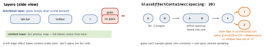

ios-platform · folio
In one line: Liquid Glass is a system material for the functional layer
(tab bars, toolbars, sheets, key controls) that floats above a full-bleed
content layer; it lenses and adapts to what is under it. Standard components get it
free with the Xcode 26 SDK; custom views opt in with .glassEffect(), grouped in a
GlassEffectContainer so shapes blend and morph.
Download PDF Print view LaTeX source


Liquid Glass (iOS 26)
.glassEffect(_:in:)— default.regularin a capsule behind the view’s bounds..regular= adaptive, use almost always ·.clear= only over media, with a dimming layer ·.identity= off, same layout..tint(_:),.interactive()(bounce/shimmer on touch).GlassEffectContainer(spacing:)renders its glass together; shapes nearer thanspacingblend. Morph:glassEffectID(_:in:)+@Namespace+ state change inwithAnimation;glassEffectUnion(id:namespace:)joins views;glassEffectTransition(.matchedGeometry)or.materialize..buttonStyle(.glass)/.glassProminent(primary action)..tabBarMinimizeBehavior(.onScrollDown)(iPhone) ·.tabViewBottomAccessory{}(inline when minimised: readtabViewBottomAccessoryPlacement) ·Tab(role: .search)+.searchable: the field replaces the bar.- Toolbars share glass:
ToolbarSpacer(.fixed | .flexible),.sharedBackgroundVisibility(.hidden),.badge(n);.scrollEdgeEffectStyle(.hard, for: .top). .backgroundExtensionEffect(): mirrors + blurs a view into the safe area (hero image under a sidebar). Once per screen.- UIKit:
UIGlassEffect,UIButton.Configuration.glass(). Opt-outUIDesignRequiresCompatibility: honoured with the 26 SDK, ignored when building for 27.
Design + accessibility
- Glass = navigation layer only; never glass on glass (fills/vibrancy on top); tint for meaning, not decoration; drop custom bar backgrounds.
- Automatic: Reduce Transparency → frostier · Increase Contrast → black/white + border · Reduce Motion → no elastic effects. Test custom glass with each.
Traps
- Glass on list cells, everywhere, or stacked on glass.
- Glass views without a container — no blend, no morph.
- “We’ll keep the old look” — opt-out ignored with the 27 SDK.
@State var m = Model()+initassignment — error on 27.
Remember
“Content below, glass above, one container, one ID.”
Example
@Namespace private var ns
@State private var open = false
GlassEffectContainer(spacing: 16) {
HStack(spacing: 16) {
Button("Edit", systemImage: "pencil") {
withAnimation { open.toggle() } }
.buttonStyle(.glass).glassEffectID("edit", in: ns)
if open {
Image(systemName: "trash").padding()
.glassEffect(.regular.tint(.red).interactive())
.glassEffectID("trash", in: ns) // morphs out
} } }
TabView { /* Tabs */ Tab(role: .search) { SearchView() } }
.tabBarMinimizeBehavior(.onScrollDown)
.tabViewBottomAccessory { NowPlayingBar() }New SwiftUI — iOS 26
WebView(page)+WebPage(WebKit,@Observable):loadreturns anAsyncSequenceof navigation events;callJavaScript.TextEditor(text: $attributed)edits anAttributedString(rich text).@AnimatablesynthesisesanimatableData(@AnimatableIgnoredopts out); a macro, so it back-deploys. AlsoChart3D, SwiftUI instrument.
New SwiftUI — iOS 27
@Stateis a macro: an@Observableobject is created lazily, once per view lifetime (back to iOS 17). Source break: default value andinitassignment → error — drop the default (TN3211).@ContentBuilderunifies builders (faster type-checking) · documents:WritableDocumentsnapshot →DocumentWriterwrites off-main..reorderable()+.reorderContainer(for:)in any container ·.swipeActionsanywhere inside.swipeActionsContainer()..alert(_:item:),.confirmationDialog(_:item:)·AsyncImageobeys HTTP caching (.asyncImageURLSession).Tab(role: .prominent),ToolbarOverflowMenu,.visibilityPriority(.high),.toolbarMinimizeBehavior(…).